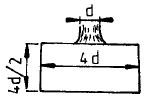
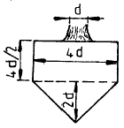
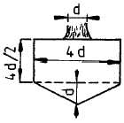
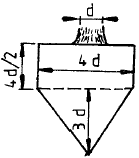
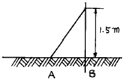

조경기능사 (2004-04-04 기출문제)
1과목: 조경일반
1. 정형식 조경 중에서 이슬람 양식의 스페인 정원이 속하는 형식은?
- 평면 기하학식
- 노단식
- 중정식
- 전원 풍경식
(정답률: 87%)

2. 우리나라 정원의 특색이 아닌 것은?
- 후원
- 화계
- 방지
- 분수
(정답률: 85%)
3. 고대 로마정원은 3개의 중정으로 구성되어 있었는데 이중 사적(私的)기능을 가진 제 2중정에 속하는 것은?
- 아트리움(Atrium)
- 지스터스(Xystus)
- 페리스틸리움(Peristylium)
- 아고라(Agora)
(정답률: 82%)
4. 현대조경에서 큰 나무 이식이 가능하도록 가장 큰 영향을 미친 요인은?
- 민주적인 사고방식
- 건축재료의 발달
- 급,배시설의 발달
- 토목기계의 발달
(정답률: 88%)
5. 자연 환경 분석 중 자연 형성 과정을 파악하기 위해서 실시하는 분석 내용이 아닌 것은?
- 지형
- 수문
- 토지이용
- 야생동물
(정답률: 51%)
6. 동양정원에서 연못을 파고 그 가운데 섬을 만드는 수법에 가장 큰 영향을 준 것은?
- 자연 지형의 영향
- 기상 요인의 영향
- 신선 사상의 영향
- 생활 양식의 영향
(정답률: 97%)
7. 백제 시대의 정원으로 현존하는 것은?
- 안압지
- 비원
- 궁남지
- 창덕궁
(정답률: 86%)
8. 우리나라 최초의 대중적인 도시 공원은?
- 남산공원
- 사직공원
- 파고다공원
- 장충공원
(정답률: 93%)
9. 조경의 시각적인 요소에 대한 설명이다. 이 중 적합하지 않는 것은?
- 상록의 울창한 숲이나 감청색의 깊은 연못은 차분 하고 존엄한 느낌을 준다.
- 대리석의 표면은 우툴두툴한 콘크리이트 표면보다 질감이 강하다.
- 질감이란 물체의 표면이 빛을 받았을 때 생기는 밝고 어두움의 배합율에 따라 시각적으로 느끼는 감각을 말한다.
- 직선은 굳건하고 남성적이며, 지그재그선은 유동적이고 활동적이다.
(정답률: 70%)
10. 도시 공원의 기능 설명으로 가장 올바르지 않은 것은?
- 레크레이션을 위한 자리를 제공 해준다.
- 그 지역의 중심적인 역할을 한다.
- 도시환경에 자연을 제공 해준다.
- 주변 부지의 생산적 가치를 높게 해준다.
(정답률: 82%)
11. 주 보행도로로 이용되는 보행공간의 포장재료로 틀리는 것은?
- 변화가 적은 재료
- 질감이 좋은 재료
- 질감이 거친 재료
- 밝은 색의 재료
(정답률: 81%)
12. 조경설계에서 보행인의 흐름을 고려하여 최단거리의 직선 동선(動線)으로 설계하지 않아도 되는 곳은?
- 대학 캠퍼스 내
- 축구경기장 입구
- 주차장, 버스정류장 부근
- 공원이나 식물원
(정답률: 83%)
13. 공원의 종류 중 여러가지 폐품이나 재료등을 제공해 주어 어린이들이 직접 자르고, 맞추고, 조립하는 놀이를 통해 창의력을 가지도록 하는 공원은?
- 모험공원
- 교통공원
- 조각공원
- 운동공원
(정답률: 74%)
14. 위락, 관광시설 분야의 조경에 해당되지 않는 대상은?
- 휴양지
- 사찰
- 유원지
- 골프장
(정답률: 88%)
15. 통일성을 달성하기 위한 수법에 해당하는 것은?
- 균형
- 비례
- 율동
- 대비
(정답률: 73%)
2과목: 조경재료
16. 산울타리를 조성 하려한다. 맹아력이 가장 강한 나무는 어느 것인가?
- 녹나무
- 이팝나무
- 소나무
- 개나리
(정답률: 79%)
17. 조경용으로 사용되는 석재 중 압축강도가 가장 큰 것은?
- 화강암
- 응회암
- 안산암
- 사문암
(정답률: 90%)
18. 플라스틱 제품의 특성이라고 할 수 있는 것은 어느 것인가?
- 콘크리트, 알루미늄보다 가볍고, 강도와 탄력성이 크다.
- 내열성이 크고 내후성, 내광성이 좋다.
- 불에 타지 않으며 부식이 된다.
- 내화성, 내산성, 내충격성 등의 특성이 있다.
(정답률: 76%)
19. 산울타리용으로 적당치 않은 나무는?
- 꽝꽝나무
- 탱자나무
- 후박나무
- 측백나무
(정답률: 77%)
20. 도자기 제품은 어떤 것인가?
- 내화 벽돌
- 외장 타일
- 보도 블록
- 토 관
(정답률: 69%)
21. 노란색 단풍이 아름다운 수종으로 짝지어진 것은?
- 은행나무, 붉나무
- 백합나무, 고로쇠나무
- 담쟁이, 감나무
- 검양옻나무, 매자나무
(정답률: 77%)
22. 지름이 2 - 3㎝ 되는 것으로 콘크리트의 골재, 작은 면적의 포장용, 미장용 등으로 사용되는 돌은?
- 왕모래
- 자갈
- 호박돌
- 산석
(정답률: 85%)
23. 양수이며 천근성 수종에 속하는 것은?
- 자작나무
- 느티나무
- 백합나무
- 은행나무
(정답률: 68%)
24. 습한 땅에서 견디는 나무가 아닌 것은?
- 낙우송
- 소나무
- 수국
- 주엽나무
(정답률: 78%)
25. 지피용 식물로서 쓸 수 있는 것은?
- 맥문동
- 등나무
- 으름덩굴
- 멀꿀
(정답률: 90%)
26. 포장용으로 주로 쓰이는 가공석은?
- 견치돌(간지석)
- 각석
- 판석
- 강석(하천석)
(정답률: 84%)
27. 교목으로 꽃이 화려하고, 공해에 약하나 열식 또는 강변 가로수로 많이 심는 나무는?
- 왕벚나무
- 수양버들
- 전나무
- 벽오동
(정답률: 87%)
28. 황색 꽃을 갖는 나무는?
- 모감주나무
- 조팝나무
- 박태기나무
- 산철쭉
(정답률: 77%)
29. 질감(texture)이 가장 부드럽게 느껴지는 나무는?
- 태산목
- 칠엽수
- 회양목
- 팔손이나무
(정답률: 78%)
30. 양잔디 기계파종시 푸른 계통의 색소를 희석하는 이유로 가장 옳은 것은?
- 파종지역을 구분 또는 확인하기 위하여
- 발아 후 활착을 돕기 위하여
- 살포지역의 암반을 푸르게 하기 위하여
- 씨앗의 유실을 방지하기 위하여
(정답률: 74%)
31. 형태가 정형적인 곳에 사용하나, 시공비가 많이 드는 돌은?
- 산석
- 강석(하천석)
- 호박돌
- 마름돌
(정답률: 70%)
32. 다음 목재 중 무른나무(soft wood)에 속하는 것은?
- 참나무
- 향나무
- 포플러
- 박달나무
(정답률: 77%)
33. 시멘트의 종류와 특성에서 높은 강도가 요구되는 공사, 급한 공사, 추운 때의 공사, 물 속이나 바다의 공사에 적합한 시멘트는?
- 조강 포틀랜드 시멘트
- 보통 포틀랜드 시멘트
- 슬래그 시멘트
- 중용열 포틀랜드 시멘트
(정답률: 84%)
34. 스테인리스 제품의 용접시 내식성을 향상시킬 수 있는 용접은?
- 산소아세틸렌용접
- 불활성가스용접
- 납땜용접
- 전기저항용접
(정답률: 59%)
35. 목재의 특성 중 장점은?
- 충격, 진동에 대한 저항성이 작다.
- 열전도율이 낮다.
- 흡수성이 크고 이것에 의한 변형이 크다.
- 가연성이며 인화점이 낮다.
(정답률: 81%)
3과목: 조경 시공 및 관리
36. 정원수를 이식할 때 가지와 잎을 적당히 잘라 주었다. 다음 목적 중 해당되는 것은?
- 생장 조장을 돕는 가지 다듬기
- 생장을 억제하는 가지 다듬기
- 세력을 갱신하는 가지 다듬기
- 생리 조정을 위한 가지 다듬기
(정답률: 66%)
37. 전정 요령으로 옳지 못한 것은?
- 나무 전체를 충분히 관찰하여 수형을 결정한 후 수형이나 목적에 맞게 전정한다.
- 불필요한 도장지는 단 한번에 제거해야 한다.
- 수양버들처럼 아래로 늘어지는 나무는 윗쪽의 눈을 남겨 둔다.
- 특별한 경우를 제외하고는 줄기 끝에서 여러 개의 가지가 발생치 않도록 해야 한다.
(정답률: 70%)
38. 한국 잔디류에 가장 많이 생기는 병해는?
- 브라운 패치
- 녹병
- 핑크 패치
- 달라 스폿
(정답률: 92%)
39. 잔디 뗏밥주기가 적당하지 않은 것은?
- 흙은 5mm 체로 쳐서 사용한다.
- 난지형 잔디의 경우는 생육이 왕성한 6~8월에 준다.
- 잔디 포지전면을 골고루 뿌리고 레이크로 긁어 준다.
- 일시에 많이 주는 것이 효과적이다.
(정답률: 88%)
40. 잔디의 거름주기 방법으로 적당하지 않은 것은?
- 질소질 거름은 1회 주는 양이 1m2 당 10g 이상이 어야한다.
- 난지형 잔디는 하절기에 한지형 잔디는 봄과 가을에 집중해서 준다.
- 화학비료인 경우 년간 3 - 8회 정도로 나누어 거름 주기 한다.
- 가능하면 제초작업 후 비오기 전에 실시한다.
(정답률: 57%)
41. 어린이 놀이터 설치 시 고려해야 될 사항 중 가장 먼저 생각해야 되는 것은?
- 안전성
- 쾌적함
- 미적인 사항
- 시설물간의 조화
(정답률: 92%)
42. 다음 중 1회 신장형 수목은?
- 철쭉
- 화백
- 삼나무
- 소나무
(정답률: 62%)
43. 모든 벽돌 쌓기 방법 중 가장 튼튼한 것으로, 길이쌓기켜 와 마구리쌓기켜가 번갈아 나오는 방법은?
- 영국식 쌓기
- 프랑스식 쌓기
- 영롱 쌓기
- 무늬 쌓기
(정답률: 85%)
44. 모란의 이식시기로 가장 적당한 때는?
- 2월상순 - 3월상순
- 3월상순 - 4월중순
- 8월상순 - 9월중순
- 10월중순 - 11월중순
(정답률: 44%)
45. 화단에 꽃을 갈아 심을 때의 요령이다. 잘못 설명된 것은?
- 화단의 변두리로부터 중앙부로 심어간다.
- 흙이 밟혀 굳어지지 않도록 널판지를 놓고 심는다.
- 꽃이 피기 시작하는 것을 심는다.
- 만개 되었을 때를 생각하여 적당한 간격으로 심는다.
(정답률: 83%)
46. 뿌리분의 생김새 중 보통분은? (단, d : 뿌리 근원지름)




(정답률: 73%)
47. 다음의 조경 시공 공사 중 마지막으로 행하는 작업은?
- 식재공사
- 급,배수 및 호안공
- 터 닦기
- 콘크리트 공사
(정답률: 88%)
48. 이식할 수목의 가식장소와 그 방법의 설명으로 잘못된 것은?
- 공사의 지장이 없는 곳에 감독관의 지시에 따라 가식 장소를 정한다.
- 그늘지고 배수가 잘 되지 않는 곳을 선택한다.
- 나무가 쓰러지지 않도록 세우고 뿌리분에 흙을 덮는다.
- 필요한 경우 관수시설 및 수목 보양시설을 갖춘다.
(정답률: 90%)
49. 소나무류의 순따기에 알맞은 적기는?
- 1 - 2 월
- 3 - 4 월
- 5 - 6 월
- 7 - 8 월
(정답률: 82%)
50. 다음 중 정원석 쌓기에 쓰이는 기구나 기계는?
- 불도우저
- 탠담 로울러
- 체인 블록
- 덤프트럭
(정답률: 89%)
51. 콘크리트의 양생을 돕기 위하여 추운 지방이나 겨울에 시멘트에 섞는 재료는 어느 것인가?
- 염화칼슘
- 생석회
- 요소
- 암모니아
(정답률: 87%)
52. 골프장의 그린에 주로 식재되어 초장을 4-7mm로 짧게 깎아 관리하는 잔디는?
- 한국 잔디
- 버뮤다 그래스
- 라이 그래스
- 벤트 그래스
(정답률: 84%)
53. 계단공사에서 발판 높이를 20cm로 했을 때 발판의 길이가 적당한 것은?
- 10 ∼ 20cm
- 20 ∼ 30cm
- 30 ∼ 40cm
- 40 ∼ 50cm
(정답률: 58%)
54. 다음과 같은 비탈경사가 1 : 0.3의 절토(切土)면에 맞추어서 거푸집을 만들고자 할 때에 말뚝의 높이를 1.5m로 한다면 지표 AB간의 거리는 어느 정도로 하면 좋은가?

- 0.37 m
- 0.45 m
- 0.5 m
- 0.6 m
(정답률: 73%)
55. 흙 쌓기 시에는 일정 높이마다 다짐을 실시하며 성토해 나가야 하는데, 그렇지 않을 경우에는 나중에 압축과 침하에 의해 계획 높이보다 줄어들게 된다. 그러한 것을 방지하고자 하는 행위를 무엇이라 하는가?
- 정지(grading)
- 취토(borrow-pit)
- 흙쌓기(filling)
- 더돋기(extra banking)
(정답률: 83%)
56. 옥상 정원의 인공지반 상단의 식재 토양층 조성시 사용 되는 경량재가 아닌 것은?
- 버미큘라이트(Vermiculite)
- 펄라이트(Perlite)
- 피트(Peat)
- 석회
(정답률: 88%)
57. 자연상태의 토량 1,000㎥을 굴착하면 그 토량은 얼마가 되는가? (단, 토량의 변화율은 L = 1.25, C = 0.9 이다.)
- 900㎥
- 1,000㎥
- 1,125㎥
- 1,250㎥
(정답률: 65%)
58. 설계단계에 있어서 시방서 및 공사비 내역서 등을 포함 하고 있는 설계는?
- 기본구상
- 기본계획
- 기본설계
- 실시설계
(정답률: 67%)
59. 거름을 주는 목적이 아닌 것은?
- 조경 수목을 아름답게 유지하도록 한다.
- 병· 해충에 대한 저항력을 증진시킨다.
- 토양 미생물의 번식을 억제시킨다.
- 열매 성숙을 돕고, 꽃을 아름답게 한다.
(정답률: 84%)
60. 콘크리트 슬럼프시험에 대한 설명 가운데 옳지 않은 것은?
- 반죽질기를 측정하는 것이다.
- 슬럼프값이 높은 수치일수록 좋은 것이다.
- 슬럼프값의 단위는 cm이다.
- 콘크리트 치기작업의 난이도를 판단할 수 있다.
(정답률: 67%)